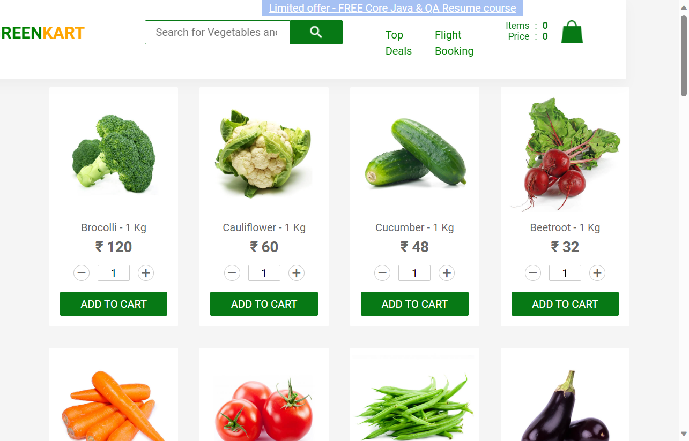

-
Greencarthomepage
7:43:03 pm / 00:00:17:213 Fail
Greencarthomepage
12.17.2023 7:43:03 pm 12.17.2023 7:43:20 pm 00:00:17:213 · #test-id=1I want to shop the vegetablesFailadd vegetables to your cartFailadd vegetables to your cartWhen user is on home pageStepdefinitions.hooks.scfailed(io.cucumber.java.Scenario)Then able to see lot of veggies and fruitsStep skippedWhen user want to add one "potato" to cart with count 4Step skippedThen user able to add to cart and checkoutStep skippedWhen user able to see "potato" and 4 at place order pageStep skippedThen user able to apply code "rahulshettyacademy" and place the orderStep skippedWhen user is on add a country "India" and accepted itStep skippedThen user is able to see the confirmation page "Thank you, your order has been placed successfully"Step skippedAnd routed to home page successfullyStep skippedStepdefinitions.hooks.close()Failadd vegetables to your cartWhen user is on home pageStepdefinitions.hooks.scfailed(io.cucumber.java.Scenario)Then able to see lot of veggies and fruitsStep skippedWhen user want to add one "onion" to cart with count 2Step skippedThen user able to add to cart and checkoutStep skippedWhen user able to see "onion" and 2 at place order pageStep skippedThen user able to apply code "rahulshettyacademy" and place the orderStep skippedWhen user is on add a country "India" and accepted itStep skippedThen user is able to see the confirmation page "Thank you, your order has been placed successfully"Step skippedAnd routed to home page successfullyStep skippedStepdefinitions.hooks.close()Failinvalid searchFailinvalid searchWhen user is on home pageStepdefinitions.hooks.scfailed(io.cucumber.java.Scenario)imageThen able to see lot of veggies and fruitsStep skippedWhen user typing invalid shredf1234Step skippedThen user able to see "Sorry, no products matched your search!"Step skippedFailinvalid searchWhen user is on home pageStepdefinitions.hooks.scfailed(io.cucumber.java.Scenario)Then able to see lot of veggies and fruitsStep skippedWhen user typing invalid PotatoStep skippedThen user able to see "Sorry, no products matched your search!"Step skippedStepdefinitions.hooks.close()
-
org.openqa.selenium.SessionNotCreatedException
1 tests
org.openqa.selenium.SessionNotCreatedException
1 failedStatus Timestamp TestName Fail 19:43:03 pm When user is on home page Greencarthomepage.invalid search.When user is on home page -
org.openqa.selenium.NoSuchWindowException
6 tests
org.openqa.selenium.NoSuchWindowException
6 failedStatus Timestamp TestName Fail 19:43:03 pm When user is on home page Greencarthomepage.add vegetables to your cart.When user is on home pageFail 19:43:10 pm Stepdefinitions.hooks.scfailed(io.cucumber.java.Scenario) Greencarthomepage.add vegetables to your cart.Stepdefinitions.hooks.scfailed(io.cucumber.java.Scenario)Fail 19:43:03 pm When user is on home page Greencarthomepage.invalid search.When user is on home pageFail 19:43:11 pm Stepdefinitions.hooks.scfailed(io.cucumber.java.Scenario) Greencarthomepage.invalid search.Stepdefinitions.hooks.scfailed(io.cucumber.java.Scenario)Fail 19:43:03 pm When user is on home page Greencarthomepage.add vegetables to your cart.When user is on home pageFail 19:43:12 pm Stepdefinitions.hooks.scfailed(io.cucumber.java.Scenario) Greencarthomepage.add vegetables to your cart.Stepdefinitions.hooks.scfailed(io.cucumber.java.Scenario) -
org.openqa.selenium.WebDriverException
3 tests
org.openqa.selenium.WebDriverException
3 failedStatus Timestamp TestName Fail 19:43:10 pm Stepdefinitions.hooks.close() Greencarthomepage.add vegetables to your cart.Stepdefinitions.hooks.close()Fail 19:43:11 pm Stepdefinitions.hooks.close() Greencarthomepage.invalid search.Stepdefinitions.hooks.close()Fail 19:43:12 pm Stepdefinitions.hooks.close() Greencarthomepage.add vegetables to your cart.Stepdefinitions.hooks.close()
-
@greencart
4 tests
@greencart
4 failedStatus Timestamp TestName Fail 19:43:03 pm add vegetables to your cart Greencarthomepage.add vegetables to your cartFail 19:43:03 pm add vegetables to your cart Greencarthomepage.add vegetables to your cartFail 19:43:03 pm invalid search Greencarthomepage.invalid searchFail 19:43:03 pm invalid search Greencarthomepage.invalid search -
@invalid
2 tests
@invalid
2 failedStatus Timestamp TestName Fail 19:43:03 pm invalid search Greencarthomepage.invalid searchFail 19:43:03 pm invalid search Greencarthomepage.invalid search
Started
Dec 17, 2023 07:43:02 pm
Ended
Dec 17, 2023 07:43:20 pm
Features Passed
0
Features Failed
1
Features
Scenarios
Steps
Timeline
Tags
| Name | Passed | Failed | Skipped | Others | Passed % |
|---|---|---|---|---|---|
| @greencart | 0 | 4 | 0 | 0 | 0% |
| @invalid | 0 | 2 | 0 | 0 | 0% |